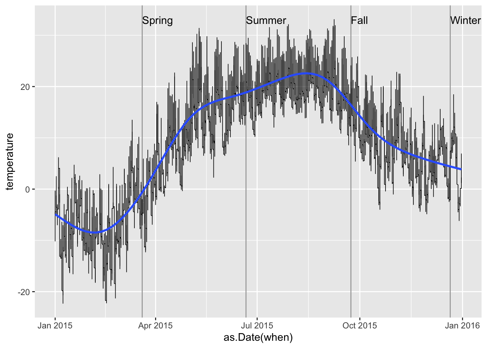
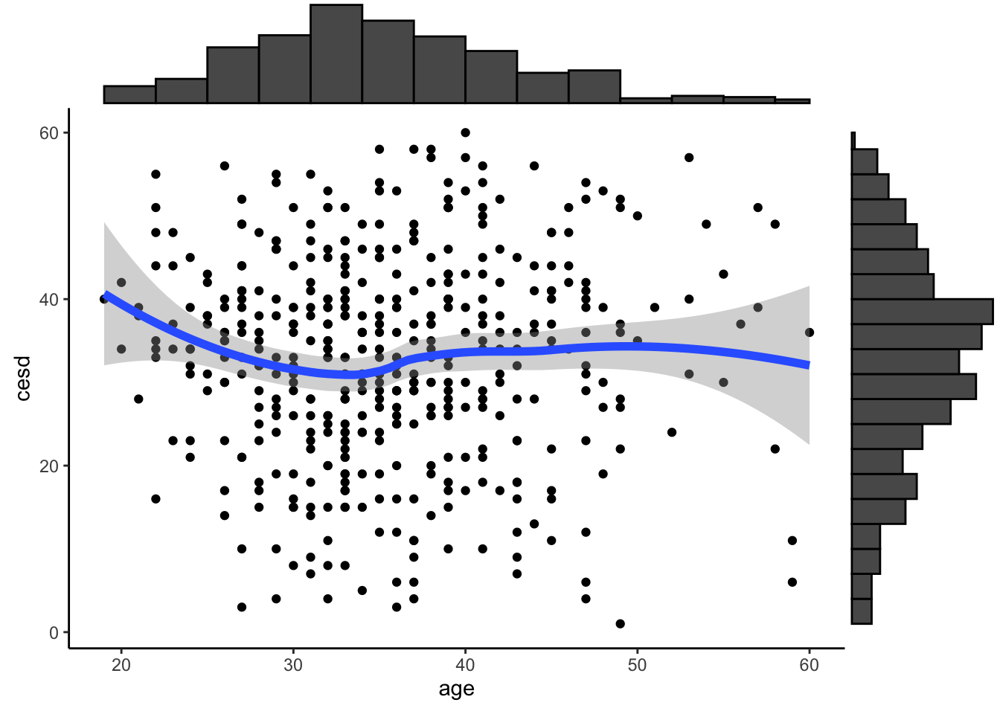
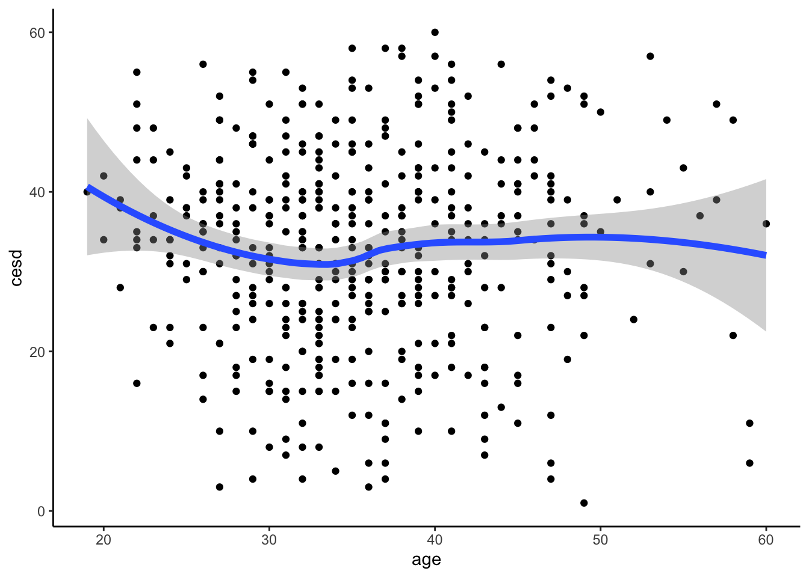
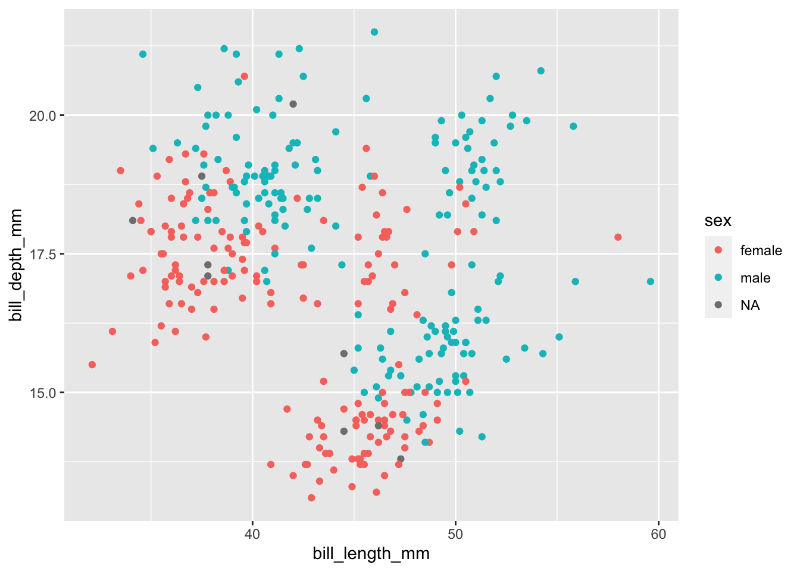
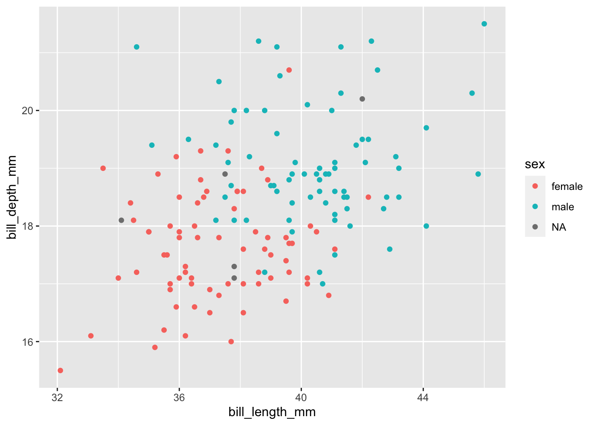

library(pacman)
p_load(tidyverse, macleish, lubridate, mdsr, DT, palmerpenguins)Stat. 651 Homework 2
Chapter 14 Exercises
Problem 3:
The macleish package contains weather data collected every 10 minutes in 2015 from two weather stations in Whately, Massachusetts.
Using the ggplot2 package, create a data graphic that displays the average temperature over each 10-minute interval (temperature) as a function of time (when) from the whately_2015 dataframe. Create annotations to include context about the four seasons: the date of the vernal and autumnal equinoxes, and the summer and winter solstices.
whately_2015 %>% select(when, temperature)# A tibble: 52,560 × 2
when temperature
<dttm> <dbl>
1 2015-01-01 00:00:00 -9.32
2 2015-01-01 00:10:00 -9.46
3 2015-01-01 00:20:00 -9.44
4 2015-01-01 00:30:00 -9.3
5 2015-01-01 00:40:00 -9.32
6 2015-01-01 00:50:00 -9.34
7 2015-01-01 01:00:00 -9.3
8 2015-01-01 01:10:00 -9.1
9 2015-01-01 01:20:00 -9.07
10 2015-01-01 01:30:00 -8.99
# … with 52,550 more rowsseasons_2015 <- tibble(
when = (ymd(c("2015 March 20", "2015 June 21", "2015 September 23", "2015 December 21"))),
season = c("Spring", "Summer", "Fall", "Winter")
)
seasons_2015# A tibble: 4 × 2
when season
<date> <chr>
1 2015-03-20 Spring
2 2015-06-21 Summer
3 2015-09-23 Fall
4 2015-12-21 Winterwhately_plot <- whately_2015 %>% ggplot(aes(y = temperature, x = as.Date(when))) +
geom_vline(data = seasons_2015, color = "darkgray", aes( xintercept = as.Date(when) ) ) +
geom_text(data = seasons_2015, aes(y = 33, label = season, hjust = "left")) +
geom_line(size = 0.3) +
geom_smooth() +
scale_x_date()Warning: Using `size` aesthetic for lines was deprecated in ggplot2 3.4.0.
ℹ Please use `linewidth` instead.whately_plot`geom_smooth()` using method = 'gam' and formula = 'y ~ s(x, bs = "cs")'
Problem 4
Modify the restaurant violations Shiny app so that it displays a table of the number of restaurants within a given type of cuisine along with a count of restaurants (as specified by the dba variable. (Hint: Be sure not to double count. The dataset should include 842 unique pizza restaurants in all boroughs and 281 Caribbean restaurants in Brooklyn.)
Violations# A tibble: 480,621 × 16
camis dba boro build…¹ street zipcode phone inspection_date action
<int> <chr> <chr> <int> <chr> <int> <dbl> <dttm> <chr>
1 30075445 MORR… BRONX 1007 MORRI… 10462 7.19e9 2015-02-09 00:00:00 Viola…
2 30075445 MORR… BRONX 1007 MORRI… 10462 7.19e9 2014-03-03 00:00:00 Viola…
3 30075445 MORR… BRONX 1007 MORRI… 10462 7.19e9 2013-10-10 00:00:00 No vi…
4 30075445 MORR… BRONX 1007 MORRI… 10462 7.19e9 2013-09-11 00:00:00 Viola…
5 30075445 MORR… BRONX 1007 MORRI… 10462 7.19e9 2013-09-11 00:00:00 Viola…
6 30075445 MORR… BRONX 1007 MORRI… 10462 7.19e9 2013-08-14 00:00:00 Viola…
7 30075445 MORR… BRONX 1007 MORRI… 10462 7.19e9 2013-08-14 00:00:00 Viola…
8 30075445 MORR… BRONX 1007 MORRI… 10462 7.19e9 2013-08-14 00:00:00 Viola…
9 30075445 MORR… BRONX 1007 MORRI… 10462 7.19e9 2013-08-14 00:00:00 Viola…
10 30075445 MORR… BRONX 1007 MORRI… 10462 7.19e9 2013-08-14 00:00:00 Viola…
# … with 480,611 more rows, 7 more variables: violation_code <chr>,
# score <int>, grade <chr>, grade_date <dttm>, record_date <dttm>,
# inspection_type <chr>, cuisine_code <dbl>, and abbreviated variable name
# ¹buildingViolationCodes# A tibble: 97 × 3
violation_code critical_flag violation_description
<chr> <chr> <chr>
1 02A Critical Food not cooked to required minimum temperature.
2 02B Critical Hot food item not held at or above 140º F.
3 02C Critical Hot food item that has been cooked and refriger…
4 02D Critical Precooked potentially hazardous food from comme…
5 02E Critical Whole frozen poultry or poultry breasts, other …
6 02F Critical Meat, fish or molluscan shellfish served raw or…
7 02G Critical Cold food item held above 41º F (smoked fish an…
8 02H Critical Food not cooled by an approved method whereby t…
9 02I Critical Food prepared from ingredients at ambient tempe…
10 02J Critical Reduced oxygen packaged (ROP) foods not cooled …
# … with 87 more rowsCuisines# A tibble: 84 × 2
cuisine_code cuisine_description
<int> <fct>
1 1 Afghan
2 2 African
3 3 American
4 4 Armenian
5 5 Asian
6 6 Australian
7 7 Bagels/Pretzels
8 8 Bakery
9 9 Bangladeshi
10 10 Barbecue
# … with 74 more rowsJoin the Cuisines to the Violations dataframe.
mergedViolations <- Violations %>%
right_join(Cuisines)Joining, by = "cuisine_code"mergedViolations# A tibble: 480,621 × 17
camis dba boro build…¹ street zipcode phone inspection_date action
<int> <chr> <chr> <int> <chr> <int> <dbl> <dttm> <chr>
1 30075445 MORR… BRONX 1007 MORRI… 10462 7.19e9 2015-02-09 00:00:00 Viola…
2 30075445 MORR… BRONX 1007 MORRI… 10462 7.19e9 2014-03-03 00:00:00 Viola…
3 30075445 MORR… BRONX 1007 MORRI… 10462 7.19e9 2013-10-10 00:00:00 No vi…
4 30075445 MORR… BRONX 1007 MORRI… 10462 7.19e9 2013-09-11 00:00:00 Viola…
5 30075445 MORR… BRONX 1007 MORRI… 10462 7.19e9 2013-09-11 00:00:00 Viola…
6 30075445 MORR… BRONX 1007 MORRI… 10462 7.19e9 2013-08-14 00:00:00 Viola…
7 30075445 MORR… BRONX 1007 MORRI… 10462 7.19e9 2013-08-14 00:00:00 Viola…
8 30075445 MORR… BRONX 1007 MORRI… 10462 7.19e9 2013-08-14 00:00:00 Viola…
9 30075445 MORR… BRONX 1007 MORRI… 10462 7.19e9 2013-08-14 00:00:00 Viola…
10 30075445 MORR… BRONX 1007 MORRI… 10462 7.19e9 2013-08-14 00:00:00 Viola…
# … with 480,611 more rows, 8 more variables: violation_code <chr>,
# score <int>, grade <chr>, grade_date <dttm>, record_date <dttm>,
# inspection_type <chr>, cuisine_code <dbl>, cuisine_description <fct>, and
# abbreviated variable name ¹buildingmergedViolations %>% select(dba, boro, cuisine_description) %>%
group_by(cuisine_description) %>%
summarize(n = n_distinct(dba)) %>%
filter(cuisine_description == "Pizza")# A tibble: 1 × 2
cuisine_description n
<fct> <int>
1 Pizza 842mergedViolations %>% select(dba, boro, cuisine_description) %>%
filter(boro == "BROOKLYN") %>%
group_by(cuisine_description) %>%
summarize(n = n_distinct(dba)) %>%
filter(cuisine_description == "Caribbean")# A tibble: 1 × 2
cuisine_description n
<fct> <int>
1 Caribbean 281Problem 6
The following code generates a scatterplot with marginal histograms.
library(mosaicData)
p <- ggplot(HELPrct, aes(x = age, y = cesd)) +
geom_point() +
theme_classic() +
stat_smooth(method = "loess", formula = y ~ x, size = 2)
ggExtra::ggMarginal(p, type = "histogram", binwidth = 3)
p
Find an example where such a display might be useful. Be sure to interpret your graphical display.
Problem 7
Using data from the palmerpenguins package, create a Shiny app that displays measurements from the penguins dataframe. Allow the user to select a species or a gender, and to choose between various attributes on a scatterplot. (Hint: examples of similar apps can be found at the Shiny gallery).
penguins# A tibble: 344 × 8
species island bill_length_mm bill_depth_mm flipper_…¹ body_…² sex year
<fct> <fct> <dbl> <dbl> <int> <int> <fct> <int>
1 Adelie Torgersen 39.1 18.7 181 3750 male 2007
2 Adelie Torgersen 39.5 17.4 186 3800 fema… 2007
3 Adelie Torgersen 40.3 18 195 3250 fema… 2007
4 Adelie Torgersen NA NA NA NA <NA> 2007
5 Adelie Torgersen 36.7 19.3 193 3450 fema… 2007
6 Adelie Torgersen 39.3 20.6 190 3650 male 2007
7 Adelie Torgersen 38.9 17.8 181 3625 fema… 2007
8 Adelie Torgersen 39.2 19.6 195 4675 male 2007
9 Adelie Torgersen 34.1 18.1 193 3475 <NA> 2007
10 Adelie Torgersen 42 20.2 190 4250 <NA> 2007
# … with 334 more rows, and abbreviated variable names ¹flipper_length_mm,
# ²body_mass_gnames(penguins)[1] "species" "island" "bill_length_mm"
[4] "bill_depth_mm" "flipper_length_mm" "body_mass_g"
[7] "sex" "year" setdiff(names(iris), "Species")[1] "Sepal.Length" "Sepal.Width" "Petal.Length" "Petal.Width" penguins %>% ggplot(aes(x = bill_length_mm, y = bill_depth_mm, color = sex )) +
geom_point()Warning: Removed 2 rows containing missing values (`geom_point()`).
penguins %>% filter(species == "Adelie") %>%
ggplot( aes(x = bill_length_mm, y = bill_depth_mm, color = sex)) + geom_point()Warning: Removed 1 rows containing missing values (`geom_point()`).
Problem 8
Create a Shiny app to display an interactive time series plot of the macleish weather data. Include a selection box to alternate between data from the whately_2015 and orchard_2015 weather stations. Add a selector of dates to include in the display. Do you notice any irregularities?